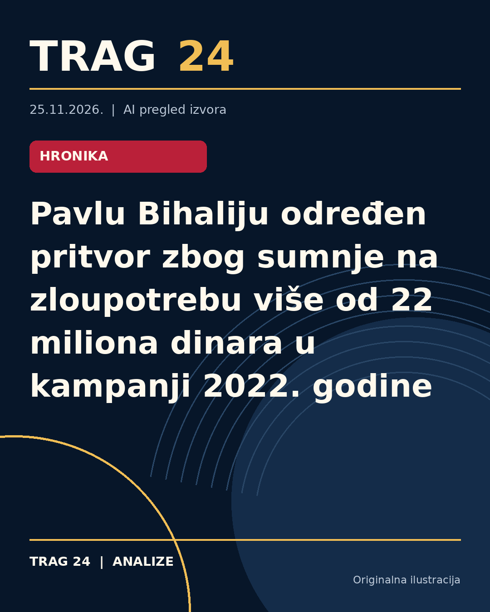

Pavlu Bihaliju određen pritvor zbog sumnje na zloupotrebu više od 22 miliona dinara u kampanji 2022. godine

ŠTA SE DOGODILO
Viši sud u Beogradu odredio je pritvor do 30 dana Pavlu Bihaliju zbog sumnje da je od maja do jula 2022. godine u svojstvu odgovornog lica nelegalno prisvojio preko 22,5 miliona dinara iz budžeta Srbije i grada Beograda. Novac je namenjen za izbornu kampanju Srpsko-ruskog pokreta u okviru koalicije Ruski manjinski savez, a sumnja se da nije iskorišćen za predviđene troškove kampanje.
HRONOLOGIJA
Novac iz budžeta uplaćen je na namenski račun uprave za trezor Srpsko-ruskog pokreta. Dana 13. maja 2022. godine sa računa je na lični račun Pavla Bihalija preneto oko 2 miliona dinara, dok je 8. jula 2022. godine pristiglo 20,5 miliona dinara, a 11. jula iste godine sredstva su takođe preneta na njegov lični račun i podignuta u gotovini. Pritvor mu je određen nakon što je saslušan u Višem javnom tužilaštvu u Beogradu koje je predložilo ovu meru.
ŠTA NAVODE IZVORI
Blic, Danas i Euronews Srbija slažu se u osnovnim činjenicama o pritvoru i iznosu štete, kao i o sumnjama na zloupotrebu položaja i podnošenju lažnog izveštaja o troškovima kampanje. Sud je pritvor obrazložio opasnošću od bekstva i mogućim uticajem na svedoke. Tužilaštvo takođe sumnja da je Bihali podneo Agenciji za sprečavanje korupcije lažni konačni izveštaj o troškovima kampanje za izbore održane 3. aprila 2022. godine, navodeći znatno manji iznos od stvarno primljenih sredstava.
ŠTA JE POTVRĐENO
Pritvor do 30 dana određen je na osnovu sumnji da je Pavle Bihali pribavio protivpravnu imovinsku korist od preko 22,5 miliona dinara zloupotrebom položaja u vezi sa finansiranjem izborne kampanje 2022. godine. Novac je sa namenskih računa Srpsko-ruskog pokreta prebačen na njegov lični račun i podignut u gotovini, a nije upotrebljen za kampanju, čime je nastala finansijska šteta budžetu Srbije i Beograda. Krivična dela koja mu se stavljaju na teret su zloupotreba položaja odgovornog lica i falsifikovanje isprave.
ŠTA NIJE POTVRĐENO
Nema potvrđenih detalja o ishodu istrage, eventualnim odbrambenim stavovima Pavla Bihalija, niti o daljim pravnim koracima osim određivanja pritvora. Takođe se ne potvrđuju dodatne okolnosti koje bi mogle objasniti upotrebu novca ili eventualnu pravnu osnovu za njegov prenos na lični račun.
ŠTA OSTАJE OTVORENO: Ostaje da se prati dalji tok istrage i eventualni sudski postupak. Nije poznato kako će se Pavle Bihali braniti u daljem postupku, niti da li će tužilaštvo pribaviti dodatne dokaze ili eventualno podići optužnicu. Takođe nije poznato da li postoje drugi umešani u zloupotrebu sredstava tokom izborne kampanje 2022. godine.
Izvori
- https://www.blic.rs/vesti/hronika/odredjen-pritvor-pavlu-bihaliju-osumnjicen-da-je-prisvojio-vise-od-225-miliona-dinara/x9gz3sh
- https://www.danas.rs/vesti/drustvo/pavle-bihalij-pritvor-30-dana/
- https://www.euronews.rs/srbija/aktuelno/253708/pavlu-bihaliju-pritvor-sumnja-na-zloupotrebu-225-miliona/vest
Ova analiza je pripremljena uz pomoć veštačke inteligencije na osnovu javno dostupnih izvora. Navodi izvora nisu nužno nezavisno potvrđeni.